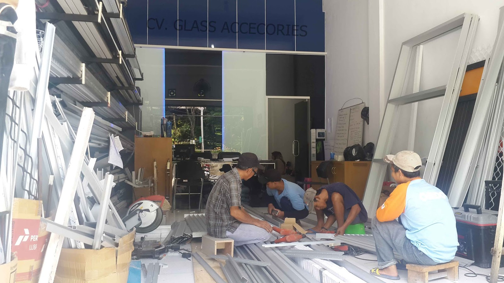

Kaca merupakan salah satu material rumah yang pasti senantiasa ada, utamanya sebagai jendela. Fungsi utama kaca merupakan sebagai pencahayaan natural dan juga sebagai komponen dari keindahan bangunan.
Sekarang sudah hadir beraneka maca ragam kaca yang dapat ditemui, tiap-tiap kaca memiliki fungsinya masing-masing. Bisa untuk system keamanan, estetika dan masih banyak yang dapat di peroleh dari pemasangan kaca. Variasi kaca-kaca tersebut diantaranya merupakan kaca tempered, kanopi kaca, kaca frameless, kaca cermin, railing kaca dan masih banyak variasi kaca lainnya yang bisa anda dapatakan dan anda aplikasikan pada bangunan. Setiap kaca memiliki fungsi masing-masing yang membikin banyak orang semakin mebutuhkannya dari hari ke hari.
Distributor & Supplier Pintu Lipat Kaca Kediri

Kaca tempered juga bisa digunakan untuk pintu lipat kaca. Jadi, bahan ini tak hanya untuk pintu saja. Pintu lipat kaca digunakan saat ruangan diterapkan untuk hal yang privacy. Anda bisa mencari model pintu lipat kaca tempered minimalis lainnya. Memang dibandingi dengan ragam kaca lainnya, harganya lebih mahal. Akan tetapi, terpautnya tidak terlalu signifikan.
Ukuran kaca menjadi elemen penentu berapa harga pintu kaca lipat Kediri yang Anda inginkan. Tetapi bukan itu saja, aksesoris komplementer juga berdampak. Anda mesti mempertimbangkan aksesoris yang melengkapi pintu kaca lipat Kediri mempunyai kualitas terbaik, seperti figur hinges. Hinges yakni aksesoris vital, karena aksesoris inilah yang berperan untuk menopang berat pintu kaca lipat Kediri. Hinges yakni aksesoris yang penting sebab hinges inilah yang menopang berat pintu kaca Anda.
Distributor & Supplier Kaca Shower
Pintu Kaca Shower pada kamar mandi adalah salah satu alternatif yang baik untuk desain interior kamar mandi modern. Penyekat ini akan memisahkan antara daerah basah yang diterapkan untuk mandi atau meletakan shower dan tempat lain yang adalah zona kering. Tentunya banyak kelebihan yang dapat di dapatkan dari penggunaan kaca shower pada kamar mandi di rumah anda. Kelebihan shower screen dibanding dengan cara penyekatan yang lain merupakan diciptakan dalam bentuk yang telah jadi dan tinggal dipasang saja. Kita tak perlu repot lagi mencari tukang sendiri karena pemasangan alat sekat ini memang membutuhkan teknik tersendiri.
Tak anda sedang memerlukan kaca shower, hal yang perlu anda lakukan yaitu mengunjungi dis.or.id. Disana anda bisa mendapat kaca shower yang bermutu dan harga yang juga relatif murah. Tak terbaik dan harga terjangkau.
Distributor, Supplier & Jasa Pasang Kanopi Kaca
Atap kaca skylight banyak diaplikasikan pada rumah, gedung, kantor, café yang mengusung gaya modern untuk membuat efek cahaya yang dramatis pada ruangan komponen bawahnya serta memberi kesan modern pada bangunan. Sifat utama material bahan atap akrilik juga dapat disebut atap acrylic, ini yakni warnanya yang jernih tembus pandang. Harga atap kaca per meter persegi juga sangat dipengaruhi oleh struktur pendukung yang di pakai. Disinilah letak perbedaan optis yang utama antara akrilik (acrylic) dengan kaca. Kalau tembus pandang, kaca meresap cahaya yang masuk sehingga kian tebal kaca maka semakin sedikit cahaya yang bisa melewatinya, maka sifat transparannya makin berkurang.|Di samping pintu kaca shower akan membuat kamar mandi kecil terlihat lebih besar.
Dis.or.id dapat membantu anda yang mau memasang atap kaca skylight pada gedung, dengan beraneka kelebihan yang bisa anda peroleh dengan memanfaatkan jasa yang di tawarkan dis.or.id. Terdapat banyak kanopi dengan berjenis-jenis ukuran dan ketebalan yang dapat anda pilih sesuai dengan yang anda butuhkan. Kalau itu, kanopi juga dapat melindungi mobil dan kendaraan lain anda. Seandainya fungsi utama kanopi sebagai pelindung untuk bangunan tersebut, pemasangan kanopi kaca juga bisa membuat bangunan menjadi terlihat lebih indah dan menarik, apalagi menerapkan konsep yang sama dengan konsep rumah minimalis. Sesudah kaca untuk atap kanopi cukup digemari. Disana anda akan memperoleh kanopi kaca yang sesuai dengan bermacam-macam ketebalan dan harga yang cukup relatif murah.
Jasa Maintenance Kaca
Jasa maintenance kaca menawarkan pelayanan perawatan bahan bangunan yang terbuat dari kaca. Salah satunya pelayanan berupa pembersihan gedung yang terbuat dari kaca. Kecuali hanya membersihkan kaca, jasa maintenance kaca juga bisa mengerjakan pembenaran. Membersihkan komponen kaca gedung Anda yang mungkin rusak, pecah, atau mengalami keadaan sulit lainnya.
Kini juga hadir maintenance kaca untuk membersihkan kaca berbentuk melengkung.
Tidak anda mebutuhkan jasa maintenance kaca, anda dapat mengunjungi dis.or.id. Selain hanya dalam hal membersihkan kaca, mereka juga sanggup mengerjakan pembetulan serta penggantian kaca yang mengalami kerusakan.
Jasa Pemasangan Kaca Tempered

Kaca Tempered yakni salah satu macam kaca dari sekian banyak ragam kaca yang kerap kali dipakai untuk jendela, pintu, dan partisi. Disana anda dapat memanfaatkan jasa maintenance kaca dengan tenaga spesialis yang sanggup membersihkan gedung kaca dengan produk pembersih kaca apa yang terbaik untuk menghilangkan kotoran dan kusam. Dengan cara kerja pendinginan yang kencang membuat kaca memiliki kelenturan dan kekuatan yang bagus kepada tekanan di kedua sisi permukaan kaca. Kaca jenis Tempered mempunyai energi 4-5 kali lebih baik dibandingkan kaca biasa dengan ketebalan yang sama. Melainkan dahulu hanya gedung perkantoran atau sentra perbelanjaan modern saja yang mengaplikasikan variasi kaca ini, sekarang rumah hunian juga telah dibangun dengan kaca tempered.
Dengan mangunjungi dis.or.id, anda dapat mendapatkan dan memanfaatkan jasa kaca tempered yang pantas dengan kemauan anda. Kecuali energi spesialis yang dimiliki oleh dis yakni yang professional dan berpengalaman. Lebih dari itu, dis.or.id sudah menyiapkan kekuatan pakar yang siap untuk melakukan pemasangan, entah itu kaca tempered untuk kanopi, pintu, partisi, balkon, dan lain sebagainya.
Distributor & Supplier Pintu Kaca

Tak cuma di gedung atau perkantoran, tapi pntu kaca juga dapat anda aplikasikan pada rumah supaya sinar dapat seketika masuk pada ruangan dan memberikan suasana hangat. Tak Anda menyukai dengan pintu kaca dengan bingkai, Anda dapat pilih apakah frame hal yang demikian terbuat dari bahan kayu atau almunium. Anda dapat pilih bahan untuk frame yang Anda inginkan, apakah itu dihasilkan dari aluminum atau dari kayu. Anda tinggal tentukan saja figur pintu kaca seperti apa yang berharap Anda miliki. Dalam hal ini, terdapat sebagian macam kaca dengan kwalitas yang terbaik. Kini paling banyak diminati dikala ini yakni kaca tempered sebab jauh lebih kuat dan bendung lama.
Dengan tenaga ahli yang sudah sungguh-sungguh handal dalam membikin pelbagai contoh pintu kaca.
Terdapat juga pilihan lain berapa kaca non-tempered yang harganya relatif lebih murah. Anda dapat memilih kaca tempered yang kini ini sedang naik daun. Untuk budget yang lebih sedikit, Anda dapat memilih variasi kaca non-tempered.
Jual Kaca Cermin
Kaca cermin sekarang tak hanya diterapkan sebagai aksesoris untuk perabotan seperti lemari rias. Kaca cermin dilapisi dengan pelapis transparan tipis dan oksida logam sebagai lapisan pelapis. Sekarang, cermin tak cuma berbentuk persegi saja. Banyak produsen kaca cermin yang membikin dengan desain yang berbeda. Jadi, cuma kelihatan transparan dari satu sisi saja. Untuk membikin ruangan private, karenanya kaca ini transparan kalau dipandang dari dalam. Sementara itu, saat diamati dari luar, kaca ini reflektif. Cermin minimalis mempunyai siku.
Malah, Anda dapat pakai kaca cermin ini sekaligus sebagai material utama, seperti sebagai pintu lemari di kamar tidur Anda. Dengan tipe kaca ini, orang yang berada di luar ruangan tak bisa memandang apa yang ada di dalam ruangan. Sementara itu, Anda yang berada di dalam ruangan bisa melihat orang lain yang ada di luar. Cermin ini umumnya ditempatkan di kamar mandi, di atas wastafel, atau di kamar tidur. Tersedia kaca cermin dengan pelbagai ukuran yang bisa anda pesan di dis.or.id. Tidak anda berminat untuk memiliki kaca cermin bagus sebagai pemanis ruangan atau sebagai pintu, anda bisa seketika mengunjungi dis.or.id. Disana anda dapat menerima kaca cermin yang pantas dengan harapan anda.
Jasa Pemasangan Railing Kaca

Kini railing kaca kini kian populer. Mungkin hal ini disebabkan semakin banyak pemilik rumah yang ingin memperlihatkan sebuah desain interior rumah yang benar-benar minimalis. Selain ini disebabkan kian banyak permintaan terhadap railing ini. Pemilik rumah ingin sekali memiliki interior yang demikian itu minimalis. Tetapi, Anda patut pastikan railing kaca berkualitas terbaik. Maka dari itu, para produsen berusaha untuk menjadikan railing yang terbuat dari kaca dengan figur yang berbeda-beda. Tak kaca ini pecah, pecahannya halus sehingga tidak akan melukai orang.
Dalam hal ini, ada banyak tipe kaca yang dapat digunakan untuk membikin railing ini. Ini ragam kaca yang betul-betul kuat. Dikatakan benar-benar aman lantaran kaca tempered tidak menimbulkan pecahan yang runcing saat tiba-tiba kaca pecah entah itu dampak kecelakaan atau musibah seperti gempa. Pecahannya amat kecil dan lembut sehingga tidak akan melukai siapapun yang terkena pecahan. Sekarang pasti, dengan railing ini, Anda tidak hanya membikin tangga dan balkon lebih aman, tapi juga untuk memperindah tampilan interior rumah Anda.
Bagi anda yang sedang mencari railing kaca dengan kwalitas terbaik, anda dapat seketika kunjungi dis.or.id. Tentu dengan harga yang murah melainkan tetap berkelas.
Jasa Pemasangan Kubikel Toilet

Kubikel kaca banyak dijumpai di berbagai tempat besar seperti perkantoran, gedung, bahnkan kini juga bisa di pakai untuk hunian rumah. Kubikel WC bisa di gunakan di toilet mall.
Anda juga dapat membikin kamar mandi di space yang lebih kecil dan tidak memerlukan lahan yang seperti itu besar untuk membuat kamar kecil yang banyak. Kalau anda sedang membutuhkan kubikel toilet, anda dapat segera mengunjungi laman dis.or.id. Mandi kubikel juga memberikan hal yang efisien dan tepat sasaran dalam pembagian space kamar mandi yang kecil.
Keuntungan dari sekat kaca memberikan adalah bisa memberikan efek luas karena ruangan tersekat namun secara visual tak.
Melainkan pemakaian kaca di kamar mandi dapat jadi persoalan saat Anda meletakkannya dengan salah. Kaca shower yang di jual di jamin kaca shower yang memiliki mutu terbaik dan berkualitas tinggi.
Distributor & Supplier Partisi Kaca
Partisi ini sekarang tidak lagi diaplikasikan di perkantoran, hotel, atau perbelanjaan saja. banyak properti yang menggunakan bahan berupa kaca sebagai partisi. Anda lihat di sentra perbelanjaan modern, hotel, dan juga perkantoran. Belum lagi pemasangan yang tak murah. Dalam hal ini, Anda patut tahu ragam kaca apa yang bagus untuk partisi. Selain itu, tentukan juga desainnya apakah partisi kaca tersebut frameless (tanpa ) atau dengan frame. itu, pertimbangkan juga privacy. Ini yang akan membuat Anda mempertimbangkan hal yang pas apakah Anda menerapkan kaca transparan, semi transparan, atau kaca cermin. Alasan yang ketiga, partisi kaca ini tidak menghabiskan space. Dengan harga yang sangat bersahabat sesuai dengan kantong anda, Lantas daripartisi kaca ini tak perlu diragukan lagi. kunjungi dis.or.id juga. Akan tetapi, Anda semestinya selektif dalam hal memilih kaca untuk partisi. itu, tentukan juga variasi kaca yang ingin digunakan apakah transparan, semi transparan, atau kaca cermin yang ruangan amat privat. juga dengan variasi kaca. jenis kaca ini mempertimbangkan privacy ruangan yang disekat. Ada kaca transparan, semi transparan, dan juga kaca cemin yang ruangan sungguh-sungguh privat. Apabila anda kesulitan untuk memasang dinding kaca penyekat, dis.or.id menyediakan jasa pemasangan dinding kaca penyekat untuk kamar mandi rumah anda.